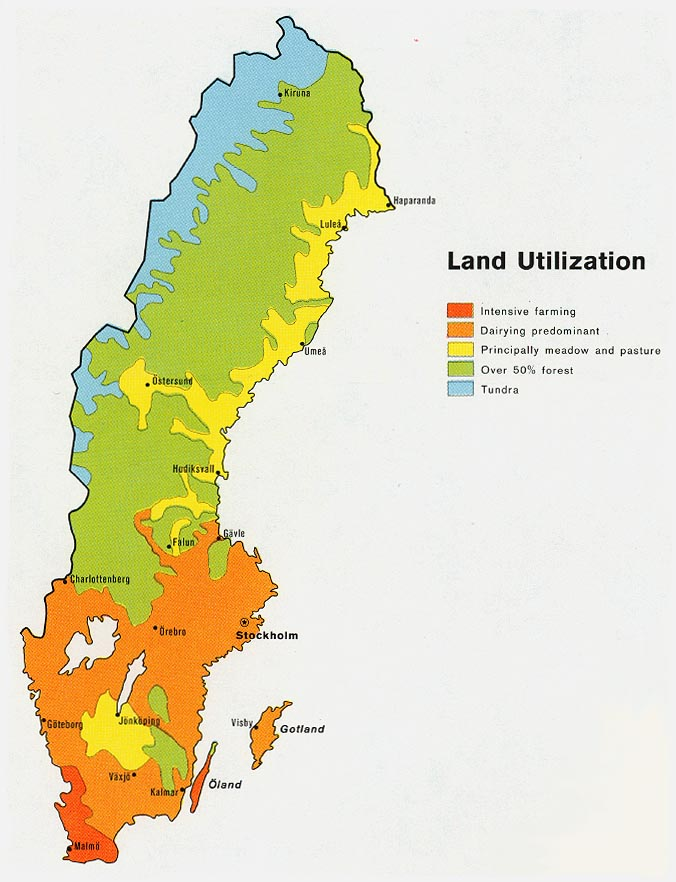

Intensive agriculture is where a lot of work is used compared to the amount of land being farmed. The oppisite is true for extensive farming as it is when a small amount of labor is used compared to land being farmed. While Sweden used to have roughly 10% of its land dedicated to farming in the 20th century it has declined in recent years to just 7%. Due to Swedens colder climate they can only really grow cereal grains like barley and wheat,
Commercial agriculture grows crops intending to sell them to companies or people for money, are ussually large, and practice extensive farming. Subsistence agriculture is its polar oppisite, genrally crops are cultivated for the farmers and surrounding area to eat, they are ussually smaller because thats all they can support, and they practice intensive farming. The Green Revolution introduced Genetically modified seeds that could have genes put in them to make specific nutrients that someone needs specialized to everyones diet in subsistence agriculture but most places that practice subsistence agriculture cant really utilize this because they are very poor. Sweden has around 550 tractors per 100 sq. km of land which may seem weird but shows us a couple of things; Sweden does a good bit of extensive agriculture because there tractor count is fairly high, and it also tells us that Sweden is a developed country because of the sheer number of tractors they have.
The Bid-Rent Theory states that however close you are to the central market will dictate the price of land based on the type of use the land is for. In Sweden farming is very perticular, it doesn't seem to follow the Bid-Rent Curve, this is because of another factor, climate; The climate in Sweden is so harsh in the north, only being able to grow cereal grains, that almost all farms are clustered around the southern tip and southeast sector.
In Sweden only 1.63% of the population is in agriculture which is due to two main factors. One is that Sweden is a very developed nation with a lot of technology in the first place. Second is that Sweden has a very small agriculture circle due to its harsh climate. So from all this we can see that Sweden doesn't produce very many crops.
